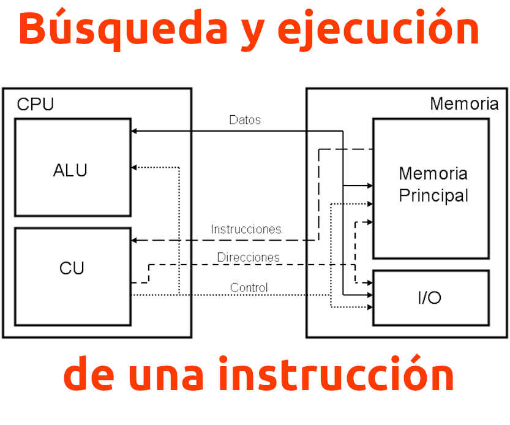
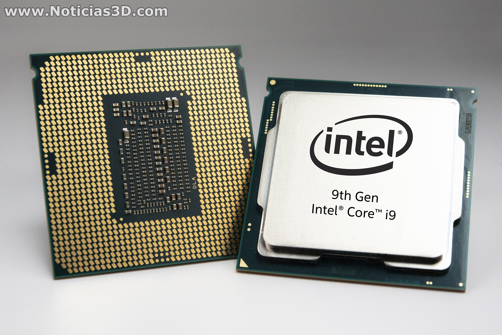
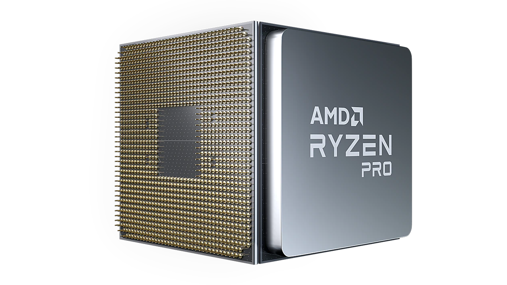
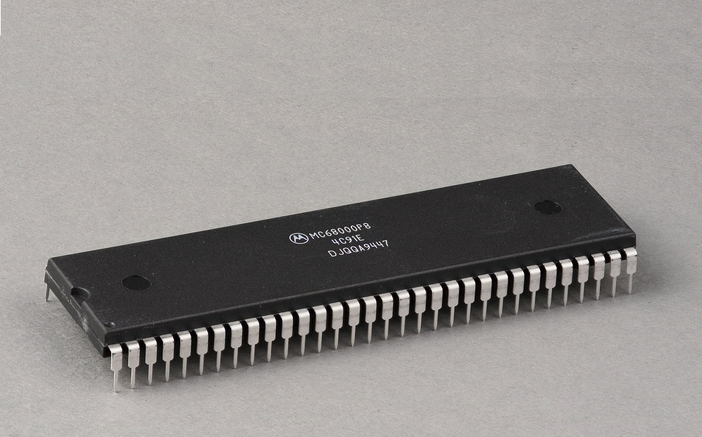
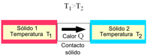

Procesadores
A nivel físico una CPU es una estructura muy compleja que se compone a día de hoy de miles de millones de transistores fabricados utilizando silicio. Los cuales se combinan formando puertas lógicas, los cuales sirven para formar las diferentes estructuras que le permiten tratar las instrucciones de manera ordenada y la ejecución del código del mismo, ya sean instrucciones de lectura a memoria cómo operaciones matemáticas como sumas, resta, multiplicaciones, divisiones y operaciones más complejas que son necesarias para ejecutar los diferentes programas.

La velocidad de un procesador se expresa en Hz, lo cual mide la cantidad de operaciones que la CPU realiza una operación. Esta es gobernada por una señal a la que llamamos reloj y suele consistir en un señal digital de onda cuadrada que marca el compás. El reloj es por tanto la cantidad de pulsos por segundo a la que trabaja la CPU en cada segundo. Siendo en los primeras CPUs de alrededor de 1 MHz, pero en la actualidad tenemos procesadores con más de 3 GHz de velocidad, y por tanto que pueden realizar más de 3000 veces más ciclos de reloj que los primeros.
Funcionamiento
El procesador no es de una sola pieza. Está formado por una serie de componentes cada uno de los cuales tiene una función concreta. El procesador trabaja de forma conjunta con la memoria RAM, que es la que almacena las instrucciones y los datos de todos los programas que se están ejecutando en el ordenador en un momento d
Componentes de un procesador
Un procesador está formado por una serie de componentes que trabajan de forma coordinada par ejecutar las instrucciones que forman los programas. Estos componentes son los siguientes:
- Unidad de interface con el bus: es quien recibe las instrucciones y los datos directamente de la memoria RAM a través del bus del sistema (o front side bus -FSB-).
- Unidad de decodificación: se encarga de decodificar la instrucción para determinar a qué instrucción corresponde la secuencia de bits que acaba de leer y saber de esta forma qué tiene que hacer el procesador con los datos leídos.
- Unidad aritmético-lógica (ALU): en ocasiones las instrucciones requieren de la realización de algún cálculo. Este es el componente básico encargado de realizar operaciones matemáticas (aritméticas y lógicas) con los datos.
- Registros: almacenan temporalmente los datos de la instrucción que está ejecutando en ese momento la unidad aritmético-lógica. El tamaño de estos registros se mide en bits y determina el tamaño máximo de los datos que puede manipular en una sola operación. Piensa que son unas casillas que se rellenan con unos y ceros. Si tenemos más cifras que casillas, tendremos que hacer la operación en 2 ó más veces porque no nos caben todos los datos.
En los procesadores actuales estos registros son de 32 o de 64 bits. Por esto decimos que un procesador es de 64 bits. Fíjate que, al doblar el tamaño de los registros necesitaremos la mitad de accesos en el caso de que las instrucciones no quepan en los registros, con lo que el ordenador podría llegar a ser el doble de rápido.
- Reloj interno: todos lo componentes anteriormente descritos trabajan de forma sincronizada por impulsos. El reloj es el encargado de proporcionar los pulsos para que todos los elementos se sincronicen.
- Unidad de control (UC): es la unidad que coordina el funcionamiento de todas las anteriores, indicando de quién es el turno de operar en cada instante.
Ejecucion de una instruccion
El proceso de ejecución de una instrucción es el siguiente (ver Figura 1): 1. la unidad de interface con el bus lee la siguiente instrucción del programa y los datos asociados, que le llegan a través del FSB. 2. la unidad de decodificación traduce la instrucción y se la pasa a la unidad de control para que decida qué hacer con ella 2 3. si la instrucción necesita ejecutar alguna operación matemática, se la pasa a la ALU 4. la ALU realiza la operación y deja el resultado en un registro 5. la unidad de control le pasa el resultado de la operación a la unidad de interfaz con el bus y le da la orden de guardarla en la memoria 6. la unidad de interfaz con el bus escribe en la memoria RAM el resultado de la ejecución de la instrucción a través del FSB Este comportamiento se ejecuta de forma continua en un bucle hasta que se alcanza el final del programa
Tipos
CPU DE UN NÚCLEO
Su origen causó una gran revolución en el mundo de la tecnología, es aquel tipo de procesador que solo cuenta con un núcleo, lo cual hace que sea posible la realización de ciertas tareas, pero era un tanto lento
CPU DE DOS NÚCLEOS
La palabra dual core o incluso en la jerga denominado como simplemente duo, hace referencia a que el procesador posee dos núcleos, es decir, que en su chip tiene 2 núcleos que realizan el trabajo. En este tipo de procesadores se puede destacar que contienen dos núcleos los cuales pueden procesar de una mejor manera, varias áreas, rindiendo mucho mejor que los procesadores que poseen sólo un núcleo. Podemos encontrar a Intel Core Duo, el cual es la línea de Intel de dos procesadores. Y AMD X2, los cuales son 2 núcleos Athlon en un solo procesador
CPU DE 4 NÚCLEOS
El término Quad indica que hay 4 núcleos en el procesador, ya sean Intel o AMD, se caracterizan por tomar muy en cuenta lo que es la relación entre la velocidad versus el consumo de energía, además estas poseen grandes capacidades para la realización de multitareas en comparación con los dos últimos CPU nombrados. Cabe mencionar que también existen los CPU de 6, 8 e inclusive de 10 núcleos, normalmente usados en la actualidad, esto es debido a que ofrecen una mayor rapidez para la realización de diferentes tareas sin ralentización. Las últimas tecnologías de teléfonos móviles incorporan hasta 8 núcleos superando en potencia a muchos de los ordenadores que habían en el pasado. Prueba de ello es la web de Repuestos Móviles que vender este tipo de placas para poder reparar nuestro teléfono, ordenador, tablet y consola de manera eficaz y ahorrando en costes.
Procesadores Intel
Procesadores AMD
Procesadores Motorola(Actualemnte ya no se fabrican)
Disipadores
El disipador de calor es en realidad un intercambiador de calor, que extrae calor de un fluido y lo cede a otro (aire ambiente, por ejemplo). O bien, extrae calor del ambiente para cederlo a un fluido. Dichos procesos de intercambio son clave en cualquier sistema de refrigeración industrial. Es decir, este dispositivo se utiliza para reducir la temperatura de algunos componentes electrónicos de los aparatos que se produce debido al uso. En el mercado podemos encontrar una gran variedad de tipos de disipadores, dependiendo de las necesidades y estructura del aparato: disipador de aire, disipadores líquidos, disipadores para PC, disipadores con láminas, o disipadores de tubo de termosifón, entre otros. Como puedes comprobar un condensador puede ser utilizado en diferentes mecanismos, sin embargo, en este post hablaremos de cómo funciona un disipador de calor en la industria.
Como funciona un disipador
Básicamente el funcionamiento de un disipador de calor, y en general de cualquier intercambiador, consiste en hacer de mecanismo de transmisión de calor de la fuente más caliente hacia la fuente más fría. Con este principio tan básico conseguimos calentar o enfría fluidos que posteriormente utilizaremos en diversos procesos industriales. Cuando un aparato está en funcionamiento, uno de sus componentes electrónicos comienza a generar calor, este suceso se produce porque los electrones están en contacto con el conducto, y se le conoce con el nombre de Efecto Joule.
Debido al choque entre los electrones y a la energía cinética que deriva de este fenómeno se incrementa el calor. Cuanto más elevado sea el nivel de energía, más calor produce el aparato en consecuencia.
Tipos de Disipadores
Existen distintos tipos de disipadores de calor, todos ellos son muy utilizados en la industria para la refrigeración de fluidos en gran variedad de procesos industriales. Los principales sistemas de disipadores de calor que podemos encontrarnos en la industria son los siguientes:
Disipador activo o pasivo
Los disipadores activos suelen tener incorporado un mecanismo que les permite mover el aire como, por ejemplo, un ventilador, lo que les hace ser más eficaces, sin embargo, suelen tener un precio más elevado. Además, suelen ser más compactos que los disipadores de calor pasivos, por lo que no ocupan tanto espacio. Por otro lado, los disipadores de calor pasivos disipan la energía del calor de forma convencional, y no tienen incorporado un sistema que les ayude a mover el aire, como ocurre con los disipadores activos. En este caso, el disipador hace uso de la radiación para expulsar el calor fuera. Conocer cual de ambas categorías utiliza un aparato es importante para conocer cómo funciona un disipador de calor, ya que existen ligeras diferencias entre ambos mecanismos.
Diferencia por materiales
Acero
El acero se emplea principalmente para los disipadores de calor de carcasa y tubo, aunque también podemos encontrar disipadores de calor de tubo y aleta en acero, e incluso placas.
Acer Inoxidable
El acero se emplea principalmente para los disipadores de calor de carcasa y tubo, aunque también podemos encontrar disipadores de calor de tubo y aleta en acero, e incluso placas.
Aluminio-Cobre
El aluminio y el cobre se emplea principalmente en los disipadores de calor de tubo y aleta, aunque también podemos encontrar intercambiadores de placas fabricados en este material.
Disipadores Intel

Disipadores AMD